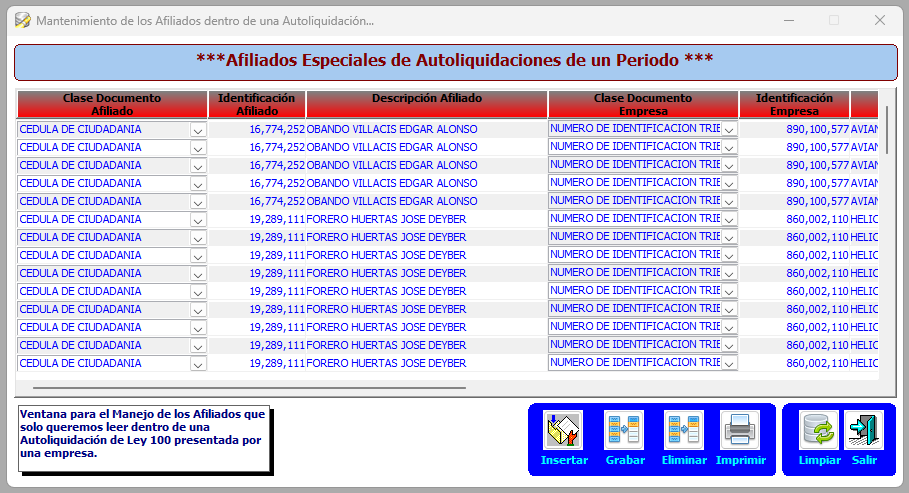
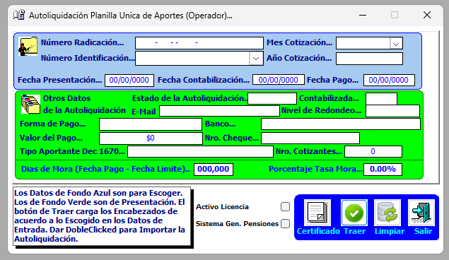

Las autoliquidaciones especiales se utilizan para aplicar aportes en casos puntuales o esporádicos, cuando no es posible o no conviene aplicar un archivo completo de planilla, sino solo un afiliado o un registro específico.
Se ingresa al proceso de Autoliquidaciones Especiales.
Se inserta un registro.
Se diligencian los datos del:
Se guarda la información.
Con este registro, el sistema permite aplicar el aporte únicamente de ese afiliado, sin volver a cargar toda la planilla.

No se explica.
